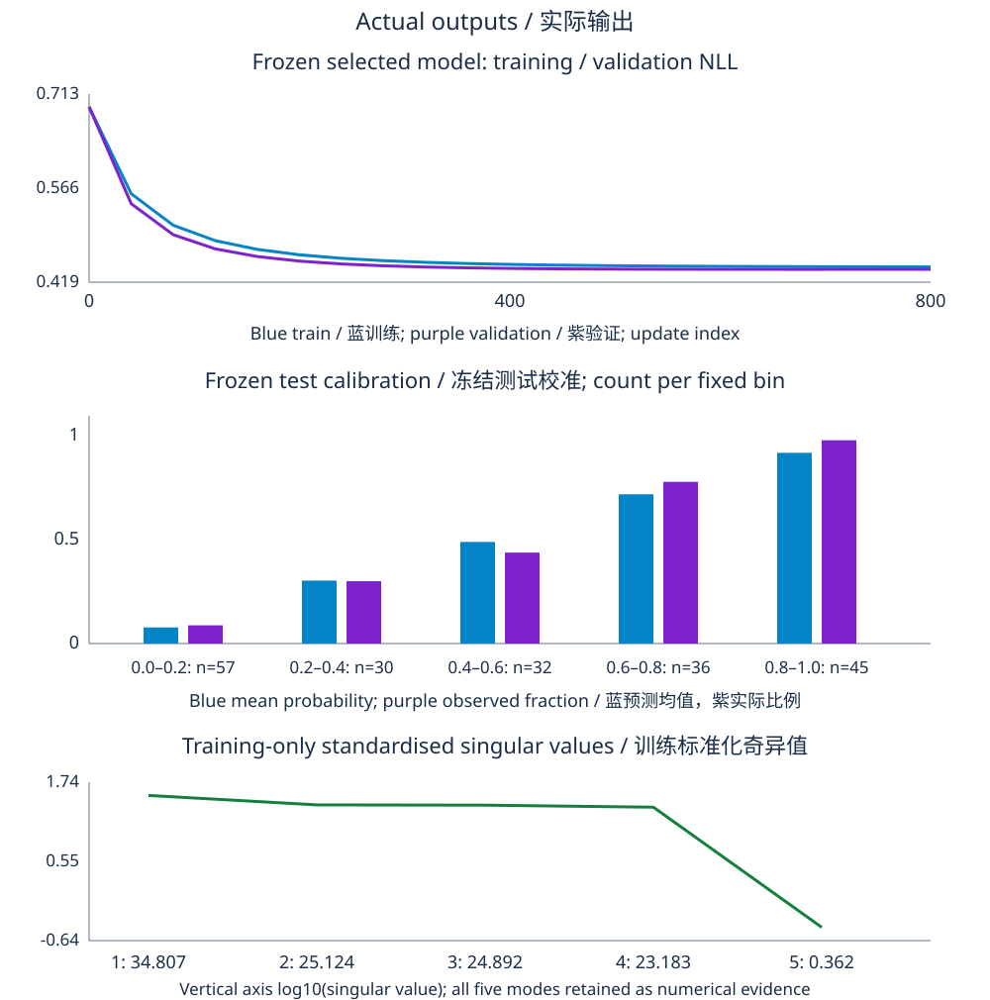

Project contract and required artefacts
Implement and defend a small binary classifier from a fixed generative model through an honest final evaluation. Use CPU NumPy; no GPU, paid API or downloaded dataset is needed. The sixteen-hour core has four four-hour stages. The reference scripts below run independently in the pinned NumPy environment, generate their own inputs, and expose actual results. Write your derivations and predict the faults before inspecting the reference solution.
Submit a data/split manifest, training-only transformation specification, mathematical appendix, runnable model, derivative-check evidence, validation selection table, four-fault diagnosis, frozen test report, three generated diagnostic plots, and one complete prediction/update trace. Separate the reference’s results from a learner submission. If you change data, draw order, optimiser, penalty or budget, execute your variant and report its actual output rather than copying these numbers.
The fixed protocol evaluates mean log-loss as the selection metric and accuracy at threshold .5 as a predeclared decision metric. It also reports Brier score, confusion counts and five fixed probability calibration bins. The final model is selected across a predeclared grid on validation only; a PCA comparison and constant-probability baseline are frozen before final testing. The test scores are estimates for the stated sampling/mixture interpretation, not a guarantee of future deployment performance.
Data generation and stratified splitting precede all fitted transformations; validation controls the choices and final test remains frozen.
Stage 1 · define and inspect · 4 hours
Generate 1,000 independent examples using NumPy default_rng with data seed 7. For exact reproducibility, draw one shape-(1000,5) standard-normal matrix in row-major order, with columns z1,z2,z3,e1,e2, then draw 1,000 uniform values for Bernoulli labels. The random generator is PCG64 in the pinned NumPy 1.26.4 environment. Recording the integer seed without the generator and draw order is insufficient to reproduce this dataset.
Set X=(z1,100z2,z1+.02e1,z3,e2), and conditional success probability p_star=σ(1.5z1−2z2+.5z3). Label y equals one when the subsequent uniform draw is below p_star. Latents and examples are independent in the generative model, while the first and third observed features are nearly dependent by construction. The fifth feature is irrelevant to this conditional label probability. The near duplicate remains a genuine nonzero noise direction; it is not an exactly redundant column.
Use an independent split generator with seed 11 and exact sizes 600/200/200. Allocate positive labels proportionally with largest remainders: floor the three positive quotas, give leftover positive counts to the largest fractional parts with train/validation/test tie order, and fill remaining slots with negatives. Shuffle indices separately within each class, allocate them, then shuffle each resulting split. This preserves proportions as closely as integer counts allow without duplicating rows. The reference has 503 positives, allocated 302/101/100.
Stratification uses labels to construct the split, as explicitly required; it does not permit using held-out feature values or labels to fit transformations or choose parameters. Fixed class counts also affect the interpretation of test uncertainty. Ordinary IID binomial formulas for an unrestricted random mixture should not be silently substituted for this stratified design. State which population or fixed class mixture a reported estimate and interval describe.
Fit feature means μ_j and population-convention standard deviations s_j with ddof=0 using training rows only. Transform every split by (x_j−μ_j)/s_j. Reject a zero training scale or specify a predeclared constant-feature policy; the generated reference has positive scales. Add an intercept column after scaling. Fit PCA only to the standardised training matrix, using its right singular vectors; validation selects retained component count. Do not whiten in this reference, and do not refit either scaler or PCA on test data.
Dataset, split, and curvature reference
Download lab1_dataset_splits_and_curvature.py
"""Exact capstone draw order and stratified split; training-only diagnostics."""
import hashlib
import sys
import numpy as np
def sigmoid(z):
z = np.asarray(z,dtype=float)
out = np.empty_like(z)
positive = z >= 0
out[positive] = 1/(1+np.exp(-z[positive]))
e = np.exp(z[~positive])
out[~positive] = e/(1+e)
return out
def dataset():
rng = np.random.default_rng(7)
latent = rng.normal(size=(1000,5)) # Row-major z1,z2,z3,e1,e2, then uniform labels.
z1,z2,z3,e1,e2 = latent.T
X = np.column_stack([z1,100*z2,z1+.02*e1,z3,e2])
probability = sigmoid(1.5*z1-2*z2+.5*z3)
y = (rng.random(1000)<probability).astype(int)
return X,y
def split(y):
rng = np.random.default_rng(11)
sizes = np.array([600,200,200])
quotas = sizes*y.sum()/len(y)
positive = np.floor(quotas).astype(int)
remainder = int(y.sum()-positive.sum())
priority = sorted(range(3),key=lambda j:(-(quotas[j]-positive[j]),j))
for j in priority[:remainder]:
positive[j] += 1
negative = sizes-positive
blocks = [[] for _ in sizes]
for label,counts in [(0,negative),(1,positive)]:
indices = np.flatnonzero(y==label)
rng.shuffle(indices)
start = 0
for j,count in enumerate(counts):
blocks[j].extend(indices[start:start+count].tolist())
start += count
result = []
for block in blocks:
indices = np.array(block,dtype=int)
rng.shuffle(indices)
result.append(indices)
assert len(set(np.concatenate(result).tolist())) == len(y)
assert [len(i) for i in result] == sizes.tolist()
return result
X,y = dataset()
train,val,test = split(y)
mean,scale = X[train].mean(axis=0),X[train].std(axis=0,ddof=0)
assert np.all(scale>0)
standardised = (X[train]-mean)/scale
raw_s = np.linalg.svd(X[train]-mean,compute_uv=False)
scaled_s = np.linalg.svd(standardised,compute_uv=False)
print('Python',sys.version.split()[0],'; NumPy',np.__version__,'; default_rng PCG64; data seed 7; split seed 11')
print('data SHA256:',hashlib.sha256(X.astype('<f8').tobytes()+y.astype('u1').tobytes()).hexdigest())
print('shape:',X.shape,'; positive labels:',int(y.sum()))
print('split sizes / positives:',[(len(i),int(y[i].sum())) for i in (train,val,test)])
print('training mean:',mean)
print('training scale ddof=0:',scale)
print('centred raw singular values:',raw_s)
print('standardised singular values:',scaled_s,'; numerical rank:',np.linalg.matrix_rank(standardised))
for name,data in [('raw',X[train]),('scaled',standardised)]:
design = np.column_stack([np.ones(len(data)),data])
bound = np.linalg.norm(design,2)**2/(4*len(data))
print(f'{name} unpenalised logistic Hessian upper bound={bound:.6f}; reciprocal={1/bound:.6f}')
print('near dependence is not exact rank deficiency; e1 contributes a small nonzero mode')
Python 3.11.8 ; NumPy 1.26.4 ; default_rng PCG64; data seed 7; split seed 11
data SHA256: 66153f6986d1b4c996690c54eb78b99c5b19c7cef9e47f6c8fda47e2516dcc72
shape: (1000, 5) ; positive labels: 503
split sizes / positives: [(600, 302), (200, 101), (200, 100)]
training mean: [-0.08151553 -1.46092851 -0.08189573 -0.02051704 -0.04430283]
training scale ddof=0: [ 0.9664932 99.56059306 0.96628383 0.97397309 0.97456022]
centred raw singular values: [2.43872925e+03 3.33444431e+01 2.42684764e+01 2.33544055e+01
3.49774556e-01]
standardised singular values: [34.80735141 25.123916 24.89247068 23.18342157 0.36193962] ; numerical rank: 5
raw unpenalised logistic Hessian upper bound=2478.617241; reciprocal=0.000403
scaled unpenalised logistic Hessian upper bound=0.504813; reciprocal=1.980931
near dependence is not exact rank deficiency; e1 contributes a small nonzero mode
The centred raw design has a singular value around 2439 for the large z2 feature and a small mode around .35. Standardisation reduces the largest to about 34.81, but the small near-duplicate contrast remains about .362. Numerical rank is five. Distinguish rank from conditioning: full rank still permits strongly correlated coefficient directions. PCA’s smallest explained-variance ratio is roughly 4.37×10^(−5), reflecting the nearly duplicate contrast rather than an arithmetic zero.
Stage gate: reproduce the data hash and split counts in the tested environment, prove the index sets are disjoint and complete, list transformation-fit rows, and explain each singular mode. The SHA256 hash is a reproducibility identifier for these generated bytes; it is separate from Module 31’s educational modular checksum.
Stage 2 · derive and implement · 4 hours
Mathematical appendix: likelihood, shapes, and gradient
Let A=[1,Z] be the design after training-only scaling, with n rows and q=d+1 columns, and θ=(b,w) have q entries. Logits t=Aθ and labels y each have n entries. Sigmoid p=σ(t) also has n entries. Bernoulli likelihood for the fixed observed labels is the product of p_i^(y_i)(1−p_i)^(1−y_i); conditional independence motivates the product. Work with negative log-likelihood to avoid underflow of that product.
The mean objective is F(θ)=mean_i[softplus(t_i)−y_i t_i]+λ||w||²/2. The intercept b is not penalised. λ refers to the mean-loss convention, so changing to a sum changes its comparable scale. For finite logits use max(t,0)−yt+log1p(exp(−|t|)); evaluate sigmoid in positive/negative branches so exponentials do not overflow. Do not clip probabilities and call that the unchanged objective. Stable evaluation can still produce probability endpoints in finite precision, while logit loss remains usable.
Derive the gradient: derivative of softplus is sigmoid, derivative of the linear label term is −y, and the chain rule for t=Aθ gives Aᵀ(p−y)/n. The penalty contributes zero intercept entry and λw slopes. Shapes are (n,q)ᵀ times (n,), producing (q,). Broadcasting a label column (n,1) against probability vector (n,) can create an unintended (n,n) error matrix; assert your intended one-dimensional label and parameter shapes rather than rely on silent broadcasting.
The Hessian is AᵀDA/n+λdiag(0,1,…,1), where D_ii=p_i(1−p_i)∈[0,1/4]. It is PSD, so the objective is convex. Its spectral norm is bounded by ||A||2²/(4n)+λ. This bound explains why raw feature scale can force very small safe gradient steps. It is a sufficient curvature estimate, not a necessary failure threshold for every trajectory. With λ>0 the slope directions are penalised; the free intercept and data still determine the full Hessian structure. With λ=0, separation can prevent a finite MLE as in Module 26.
For this fixture, the unpenalised raw Hessian upper bound is about 2478.62, versus .504813 after scaling. Rate .2 on raw coordinates lies far outside the conservative reciprocal-curvature scale; the actual training NLL rises from log2≈.693 to about 76.18 after one step and 104.50 after ten. The same stable arithmetic computes these bad updates accurately. The repair changes coordinates and chooses rates appropriate to the transformed objective, rather than masking the large losses with probability clipping.
Proof and derivative obligations
Write the likelihood-to-loss and chain-rule derivation with all dimensions. Independently compare central differences of the same smooth scalar penalised objective on eight controlled training rows, at θ=linspace(−.2,.3,6), λ=.03 and h=10^(−5). The reference norm error is about 1.55×10^(−11). Explain why this check is local evidence, why a sweep around that h is useful, and why a missing n factor is an algebraic convention fault. Include the intercept penalty explicitly in both checks.
For PCA, decompose the training-scaled matrix Z_train=UΣVᵀ. A retained V_k has shape (d,k), projected rows have k entries, and the logistic design has k+1 columns. Component variance proportions are σ_j²/Σσ²; the common sample-covariance denominator cancels. PCA maximises retained input variance, not predictive label information. Validation may prefer many components, and a tiny variance direction is not automatically irrelevant in another problem. With all five components retained and no whitening, this is an orthogonal rotation, not compression.
Follow the n×d feature matrix into n×(d+1) design, n logits, and a (d+1)-entry gradient; PCA changes d to k.
Stage gate: show a finite-logit loss calculation, gradient dimensions and numerical evidence. Predict the raw-step failure from curvature, then distinguish near dependence, exact rank deficiency and PCA truncation.
Stage 3 · select and diagnose · 4 hours
Complete reference pipeline
Train each candidate for exactly 800 full-batch updates from zero. The full-feature grid uses rates .05,.2,1 and λ=0,.01,.1. The PCA comparison uses k=2,3,4,5, rate .2 and λ=.01. Fit the shared scaler and PCA basis once on training only; select across the thirteen fixed configurations by validation mean NLL, with first-grid-entry tie order. A constant model predicts the training positive fraction, about .503333. Freeze these rules, accuracy threshold .5 and five equal-width probability bins before any final test metric.
Every candidate has the same update count, but step sizes change optimisation progress over that budget. A validation preference for a slower rate may reflect its finite-time regularisation; it is not a universal best rate for a fully converged problem. The reference’s selected full model uses rate .05 and λ=0. The separately selected PCA comparison retains five components. Thus this result does not demonstrate beneficial dimensional reduction, even though reduced variants were evaluated properly on validation.
The script prints its frozen choices before evaluating test rows. It keeps those trained weights rather than silently refitting on train plus validation, which would produce a different final fitting procedure. If you want such a refit, define it before testing and explain how the scaler, PCA, update count and penalty are refit; do not quietly substitute it for this reference contract.
Download lab2_checked_learning_pipeline.py
"""Complete NumPy CPU capstone: fixed draw/split, selection, PCA, frozen test.
Mean Bernoulli NLL + lambda/2 * squared slopes; intercept unpenalised.
800 full-batch zero-initialised updates for each predeclared candidate.
Bootstrap intervals are approximate and conditional on observed class counts;
they freeze the fitted predictors rather than refitting the learning procedure.
"""
import argparse
import hashlib
import math
from pathlib import Path
import sys
import numpy as np
def sigmoid(z):
z = np.asarray(z,dtype=float)
out = np.empty_like(z)
positive = z>=0
out[positive] = 1/(1+np.exp(-z[positive]))
e = np.exp(z[~positive])
out[~positive] = e/(1+e)
return out
def dataset():
rng = np.random.default_rng(7)
latent = rng.normal(size=(1000,5))
z1,z2,z3,e1,e2 = latent.T
X = np.column_stack([z1,100*z2,z1+.02*e1,z3,e2])
y = (rng.random(1000)<sigmoid(1.5*z1-2*z2+.5*z3)).astype(int)
return X,y
def split(y):
rng = np.random.default_rng(11)
sizes = np.array([600,200,200])
quotas = sizes*y.sum()/len(y)
positive = np.floor(quotas).astype(int)
priority = sorted(range(3),key=lambda j:(-(quotas[j]-positive[j]),j))
for j in priority[:int(y.sum()-positive.sum())]:
positive[j] += 1
blocks = [[] for _ in sizes]
for label,counts in [(0,sizes-positive),(1,positive)]:
indices = np.flatnonzero(y==label)
rng.shuffle(indices)
start = 0
for j,count in enumerate(counts):
blocks[j].extend(indices[start:start+count].tolist())
start += count
result = []
for block in blocks:
indices = np.array(block,dtype=int)
rng.shuffle(indices)
result.append(indices)
assert len(set(np.concatenate(result).tolist())) == len(y)
assert [len(i) for i in result] == [600,200,200]
return result
def design(X):
return np.column_stack([np.ones(len(X)),X])
def losses(A,y,w):
assert A.ndim == 2 and y.shape == (len(A),) and w.shape == (A.shape[1],), 'design, labels and parameters must have the declared shapes'
z = A@w
return np.maximum(z,0)-y*z+np.log1p(np.exp(-np.abs(z)))
def objective(A,y,w,penalty):
return losses(A,y,w).mean()+penalty*np.dot(w[1:],w[1:])/2
def gradient(A,y,w,penalty):
assert A.ndim == 2 and y.shape == (len(A),) and w.shape == (A.shape[1],), 'avoid unintended label-column broadcasting'
result = A.T@(sigmoid(A@w)-y)/len(y)
result[1:] += penalty*w[1:]
return result
def fit(A,y,validation,val_y,rate,penalty,steps=800):
w = np.zeros(A.shape[1])
trace = []
for t in range(steps+1):
if t%40 == 0:
trace.append((t,losses(A,y,w).mean(),losses(validation,val_y,w).mean()))
if t<steps:
w -= rate*gradient(A,y,w,penalty)
assert np.isfinite(w).all()
return w,trace
X,y = dataset()
train,val,test = split(y)
mean,scale = X[train].mean(0),X[train].std(0,ddof=0)
assert np.all(scale>0)
Z = (X-mean)/scale
_,singular,Vt = np.linalg.svd(Z[train],full_matrices=False)
print('Python',sys.version.split()[0],'; NumPy',np.__version__,'; PCG64 data/split seeds 7/11')
print('data SHA256:',hashlib.sha256(X.astype('<f8').tobytes()+y.astype('u1').tobytes()).hexdigest())
print('split sizes/positives:',[(len(i),int(y[i].sum())) for i in (train,val,test)])
print('training-only standardised singular values:',singular)
print('training-only PCA explained variance ratios:',singular**2/np.sum(singular**2))
# Independent smooth derivative check of the full objective on a controlled subset.
small = design(Z[train[:8]])
small_y = y[train[:8]]
probe = np.linspace(-.2,.3,6)
penalty,step = .03,1e-5
analytic = gradient(small,small_y,probe,penalty)
numeric = np.array([(objective(small,small_y,probe+step*np.eye(6)[j],penalty)-objective(small,small_y,probe-step*np.eye(6)[j],penalty))/(2*step) for j in range(6)])
error = np.linalg.norm(numeric-analytic)
assert error<1e-8
print(f'mean NLL + unpenalised-intercept ridge gradient-check error={error:.6e}; h={step:g}')
# Deliberately unsafe raw-coordinate rate, diagnosed using training only.
raw = design(X[train])
bad = np.zeros(6)
raw_trace = []
for t in range(11):
raw_trace.append(losses(raw,y[train],bad).mean())
if t<10:
bad -= .2*gradient(raw,y[train],bad,0)
print('raw eta=.2 train NLL at 0/1/10:',[raw_trace[j] for j in (0,1,10)])
assert raw_trace[10]>raw_trace[0]
records = []
for rate in (.05,.2,1.):
for penalty in (0.,.01,.1):
A,B = design(Z[train]),design(Z[val])
w,trace = fit(A,y[train],B,y[val],rate,penalty)
score = losses(B,y[val],w).mean()
record = {'kind':'full','k':5,'rate':rate,'penalty':penalty,'score':score,'w':w,'trace':trace,'basis':None}
records.append(record)
print(f'full rate={rate:g}; lambda={penalty:g}; validation NLL={score:.6f}')
for k in (2,3,4,5):
basis = Vt[:k].T # ONLY training SVD, no whitening.
A,B = design(Z[train]@basis),design(Z[val]@basis)
w,trace = fit(A,y[train],B,y[val],.2,.01)
score = losses(B,y[val],w).mean()
records.append({'kind':'PCA','k':k,'rate':.2,'penalty':.01,'score':score,'w':w,'trace':trace,'basis':basis})
print(f'PCA k={k}; rate=.2; lambda=.01; validation NLL={score:.6f}')
chosen = min(records,key=lambda r:r['score']) # Stable first-grid-entry tie order.
pca_chosen = min((r for r in records if r['kind']=='PCA'),key=lambda r:r['score'])
def config(r):
return {key:r[key] for key in ('kind','k','rate','penalty')}
print('FROZEN primary choice:',config(chosen))
print('FROZEN PCA comparison:',config(pca_chosen))
baseline_probability = y[train].mean()
print(f'FROZEN baseline probability={baseline_probability:.6f}; threshold=.5; five fixed calibration bins')
def model_design(r,indices):
features = Z[indices] if r['basis'] is None else Z[indices]@r['basis']
return design(features)
test_A = model_design(chosen,test)
test_loss = losses(test_A,y[test],chosen['w'])
test_probability = sigmoid(test_A@chosen['w'])
test_correct = (test_probability>=.5)==y[test]
base_loss = -(y[test]*np.log(baseline_probability)+(1-y[test])*np.log1p(-baseline_probability))
base_correct = (baseline_probability>=.5)==y[test]
pca_A = model_design(pca_chosen,test)
print(f'primary test NLL={test_loss.mean():.6f}; accuracy@.5={test_correct.mean():.6f}; Brier={np.mean((test_probability-y[test])**2):.6f}')
print(f'baseline test NLL={base_loss.mean():.6f}; accuracy@.5={base_correct.mean():.6f}')
print(f'frozen PCA test NLL={losses(pca_A,y[test],pca_chosen["w"]).mean():.6f}; no test-based reselection')
predicted = test_probability>=.5
TP = int(np.sum(predicted&(y[test]==1)))
FP = int(np.sum(predicted&(y[test]==0)))
FN = int(np.sum(~predicted&(y[test]==1)))
TN = int(np.sum(~predicted&(y[test]==0)))
print('test TP/FP/FN/TN:',TP,FP,FN,TN)
calibration = []
for j in range(5):
selected = (test_probability>=j/5)&((test_probability<(j+1)/5) if j<4 else (test_probability<=1))
count = int(selected.sum())
if count:
item = (j,count,float(test_probability[selected].mean()),float(y[test][selected].mean()))
calibration.append(item)
print(f'calibration bin {j}: n={count}; mean predicted={item[2]:.6f}; observed fraction={item[3]:.6f}')
else:
print(f'calibration bin {j}: empty; no fraction estimate')
rng = np.random.default_rng(32032)
strata = [np.flatnonzero(y[test]==label) for label in (0,1)]
bootstrap = []
for _ in range(1000):
indices = np.concatenate([rng.choice(group,len(group),replace=True) for group in strata])
bootstrap.append((test_loss[indices].mean(),test_correct[indices].mean(),(test_loss[indices]-base_loss[indices]).mean()))
intervals = np.quantile(np.array(bootstrap),[.025,.975],axis=0)
print('approximate conditional stratified percentile 95% intervals; 1000 repeats, PCG64 seed32032:')
for j,name in enumerate(('NLL','accuracy','paired NLL difference primary-minus-baseline')):
print(name,intervals[:,j])
print('Frozen predictions; fixed observed class counts. Intervals omit refitting and prevalence uncertainty; no universal population guarantee.')
# One complete mean update and final prediction trace on the first training row.
first_A = model_design(chosen,train)
g0 = gradient(first_A,y[train],np.zeros(first_A.shape[1]),chosen['penalty'])
w1 = -chosen['rate']*g0
row = first_A[0]
print('trace first training ID:',int(train[0]),'; raw row:',X[train[0]],'; standardised row:',Z[train[0]],'; label:',int(y[train[0]]))
print('trace model row:',row,'; initial z=0,p=.5,loss=log2; row gradient:',(.5-y[train[0]])*row)
print('trace full mean g0:',g0,'; first updated w:',w1,'; first updated probability:',float(sigmoid(np.array([row@w1]))[0]))
print('trace final w:',chosen['w'],'; final row logit:',float(row@chosen['w']),'; probability:',float(sigmoid(np.array([row@chosen['w']]))[0]))
parser = argparse.ArgumentParser()
parser.add_argument('--output')
args = parser.parse_args()
if args.output:
pieces = ['<svg xmlns="http://www.w3.org/2000/svg" viewBox="0 0 1000 1010" role="img" aria-label="Executed training validation loss curves, fixed-bin test calibration and training singular values"><rect width="1000" height="1010" fill="white"/><g font-family="system-ui" fill="#1a2e4a">']
def label(x,y,s,size=20,anchor='start'):
pieces.append(f'<text x="{x}" y="{y}" font-size="{size}" text-anchor="{anchor}">{s}</text>')
def line(points,colour):
path = ' '.join(('M' if j==0 else 'L')+f'{a:.3f},{b:.3f}' for j,(a,b) in enumerate(points))
pieces.append(f'<path d="{path}" fill="none" stroke="{colour}" stroke-width="3"/>')
label(500,30,'Actual outputs / 实际输出',24,'middle')
label(500,70,'Frozen selected model: training / validation NLL',22,'middle')
pieces.append('<path d="M90,95V285H940" fill="none" stroke="#64748b"/>')
trace = chosen['trace']
lower = min(min(row[1:]) for row in trace)-.02
upper = max(max(row[1:]) for row in trace)+.02
for index,colour in [(1,'#0284c7'),(2,'#7e22ce')]:
line([(90+850*t/800,285-190*(row[index]-lower)/(upper-lower)) for row in trace for t in [row[0]]],colour)
for value in (lower,(lower+upper)/2,upper):
label(80,290-190*(value-lower)/(upper-lower),f'{value:.3f}',17,'end')
for t in (0,400,800):
label(90+850*t/800,310,str(t),18,'middle')
label(500,343,'Blue train / 蓝训练; purple validation / 紫验证; update index',18,'middle')
label(500,392,'Frozen test calibration / 冻结测试校准; count per fixed bin',22,'middle')
pieces.append('<path d="M90,420V650H940" fill="none" stroke="#64748b"/>')
for j,count,pred,observed in calibration:
x = 145+160*j
for off,value,colour in [(0,pred,'#0284c7'),(45,observed,'#7e22ce')]:
pieces.append(f'<rect x="{x+off}" y="{650-210*value}" width="35" height="{210*value}" fill="{colour}"/>')
label(x+40,680,f'{j/5:.1f}–{(j+1)/5:.1f}: n={count}',17,'middle')
for value in (0,.5,1):
label(80,655-210*value,str(value),18,'end')
label(500,714,'Blue mean probability; purple observed fraction / 蓝预测均值，紫实际比例',18,'middle')
label(500,761,'Training-only standardised singular values / 训练标准化奇异值',22,'middle')
pieces.append('<path d="M90,790V950H940" fill="none" stroke="#64748b"/>')
logs = np.log10(singular)
low,high = float(logs.min()-.2),float(logs.max()+.2)
line([(150+170*j,950-160*(v-low)/(high-low)) for j,v in enumerate(logs)],'#15803d')
for j,value in enumerate(singular):
label(150+170*j,978,f'{j+1}: {value:.3f}',18,'middle')
for value in (low,(low+high)/2,high):
label(80,955-160*(value-low)/(high-low),f'{value:.2f}',17,'end')
label(500,1005,'Vertical axis log10(singular value); all five modes retained as numerical evidence',17,'middle')
pieces.append('</g></svg>')
Path(args.output).write_text(''.join(pieces),encoding='utf-8')
Python 3.11.8 ; NumPy 1.26.4 ; PCG64 data/split seeds 7/11
data SHA256: 66153f6986d1b4c996690c54eb78b99c5b19c7cef9e47f6c8fda47e2516dcc72
split sizes/positives: [(600, 302), (200, 101), (200, 100)]
training-only standardised singular values: [34.80735141 25.123916 24.89247068 23.18342157 0.36193962]
training-only PCA explained variance ratios: [4.03850571e-01 2.10403718e-01 2.06545032e-01 1.79157012e-01
4.36667623e-05]
mean NLL + unpenalised-intercept ridge gradient-check error=1.546096e-11; h=1e-05
raw eta=.2 train NLL at 0/1/10: [0.6931471805599453, 76.18494016307439, 104.49551978394732]
full rate=0.05; lambda=0; validation NLL=0.439358
full rate=0.05; lambda=0.01; validation NLL=0.439965
full rate=0.05; lambda=0.1; validation NLL=0.474164
full rate=0.2; lambda=0; validation NLL=0.440024
full rate=0.2; lambda=0.01; validation NLL=0.439577
full rate=0.2; lambda=0.1; validation NLL=0.474160
full rate=1; lambda=0; validation NLL=0.439975
full rate=1; lambda=0.01; validation NLL=0.439575
full rate=1; lambda=0.1; validation NLL=0.474160
PCA k=2; rate=.2; lambda=.01; validation NLL=0.507205
PCA k=3; rate=.2; lambda=.01; validation NLL=0.491433
PCA k=4; rate=.2; lambda=.01; validation NLL=0.439581
PCA k=5; rate=.2; lambda=.01; validation NLL=0.439577
FROZEN primary choice: {'kind': 'full', 'k': 5, 'rate': 0.05, 'penalty': 0.0}
FROZEN PCA comparison: {'kind': 'PCA', 'k': 5, 'rate': 0.2, 'penalty': 0.01}
FROZEN baseline probability=0.503333; threshold=.5; five fixed calibration bins
primary test NLL=0.401414; accuracy@.5=0.825000; Brier=0.129401
baseline test NLL=0.693169; accuracy@.5=0.500000
frozen PCA test NLL=0.406029; no test-based reselection
test TP/FP/FN/TN: 79 14 21 86
calibration bin 0: n=57; mean predicted=0.077600; observed fraction=0.087719
calibration bin 1: n=30; mean predicted=0.302816; observed fraction=0.300000
calibration bin 2: n=32; mean predicted=0.488911; observed fraction=0.437500
calibration bin 3: n=36; mean predicted=0.717846; observed fraction=0.777778
calibration bin 4: n=45; mean predicted=0.917400; observed fraction=0.977778
approximate conditional stratified percentile 95% intervals; 1000 repeats, PCG64 seed32032:
NLL [0.33920608 0.46799432]
accuracy [0.77 0.875]
paired NLL difference primary-minus-baseline [-0.35396333 -0.22517509]
Frozen predictions; fixed observed class counts. Intervals omit refitting and prevalence uncertainty; no universal population guarantee.
trace first training ID: 623 ; raw row: [-0.43464826 3.15570979 -0.44138343 0.02479421 -0.69902493] ; standardised row: [-0.36537528 0.04637014 -0.37203117 0.04652208 -0.67181286] ; label: 0
trace model row: [ 1. -0.36537528 0.04637014 -0.37203117 0.04652208 -0.67181286] ; initial z=0,p=.5,loss=log2; row gradient: [ 0.5 -0.18268764 0.02318507 -0.18601558 0.02326104 -0.33590643]
trace full mean g0: [-0.00333333 -0.17202693 0.23010693 -0.17178737 -0.08341481 0.00668106] ; first updated w: [ 0.00016667 0.00860135 -0.01150535 0.00858937 0.00417074 -0.00033405] ; first updated probability: 0.49842835081599035
trace final w: [-0.00846219 0.66168633 -1.65527811 0.65585103 0.48320526 0.03208655] ; final row logit: -0.5700549555373022 ; probability: 0.36122414424442933

Four mandatory fault diagnoses
The fault script isolates each failure and repair. It is separate from the final-model comparison, so deliberate corruptions do not become hidden candidate choices. Provide a prediction, measured failure and mathematical repair for all four:
| Fault | Required evidence | Repair and reason |
|---|---|---|
| Preprocessing leakage | A large held-out sentinel changes the all-data mean but leaves the training-only mean unchanged. | Fit transformations using training rows only; the future feature value must not influence past fitting. |
| Overflowing logits | Naive extreme-logit probability losses become infinite; stable finite-logit NLL is 1000. | Use branched sigmoid and logit loss, preserving the original objective. |
| Missing mean-gradient factor | Correct central difference agrees; unnormalised sum gradient has a persistent mismatch. | Divide by n for the mean objective and retain the same penalty convention. |
| Misleading prevalence metric | Always-zero accuracy changes .95→.05 while positive recall remains zero. | Declare prevalence, confusion counts, threshold/cost and probability evidence; accuracy alone omits the intended behaviour. |
Download lab3_required_fault_diagnostics.py
"""Four required faults, each demonstrated and repaired on controlled inputs."""
import numpy as np
def sigmoid(z):
z = np.asarray(z,dtype=float)
out = np.empty_like(z)
positive = z>=0
out[positive] = 1/(1+np.exp(-z[positive]))
e = np.exp(z[~positive])
out[~positive] = e/(1+e)
return out
rng = np.random.default_rng(7)
latent = rng.normal(size=(1000,5))
z1,z2,z3,e1,e2 = latent.T
X = np.column_stack([z1,100*z2,z1+.02*e1,z3,e2])
y = (rng.random(1000)<sigmoid(1.5*z1-2*z2+.5*z3)).astype(int)
split_rng = np.random.default_rng(11)
sizes = np.array([600,200,200])
quotas = sizes*y.sum()/1000
counts = np.floor(quotas).astype(int)
priority = sorted(range(3),key=lambda j:(-(quotas[j]-counts[j]),j))
for j in priority[:int(y.sum()-counts.sum())]:
counts[j] += 1
blocks = [[] for _ in sizes]
for label,allocations in [(0,sizes-counts),(1,counts)]:
ids = np.flatnonzero(y==label)
split_rng.shuffle(ids)
begin = 0
for j,count in enumerate(allocations):
blocks[j].extend(ids[begin:begin+count].tolist())
begin += count
train,val,test = [np.array(block,dtype=int) for block in blocks]
for ids in (train,val,test):
split_rng.shuffle(ids)
assert len(set(np.concatenate([train,val,test]).tolist())) == 1000
# 1. Preprocessing leakage: change a held-out value, never a training value.
mean = X[train].mean(0)
changed = X.copy()
changed[val[0],0] += 1e6
assert np.array_equal(changed[train].mean(0),mean)
leaked_change = np.linalg.norm(changed.mean(0)-X.mean(0))
assert leaked_change>999
print('leakage fault: held-out sentinel changes all-data mean by',leaked_change,'; train-only mean unchanged')
# 2. Overflow: preserving the exact finite-logit loss rather than clipping.
z = np.array([-1000.,1000.])
labels = np.array([1.,0.])
with np.errstate(over='ignore',divide='ignore',invalid='ignore'):
naive_probability = 1/(1+np.exp(-z))
naive_loss = -labels*np.log(naive_probability)-(1-labels)*np.log(1-naive_probability)
stable_loss = np.maximum(z,0)-labels*z+np.log1p(np.exp(-np.abs(z)))
assert np.isfinite(stable_loss).all()
print('overflow fault: naive losses',naive_loss,'; repaired logit losses',stable_loss)
# 3. Missing mean factor: a smooth numerical check independent of the gradient.
scale = X[train].std(0,ddof=0)
A = np.column_stack([np.ones(12),(X[train[:12]]-mean)/scale])
labels = y[train[:12]]
w = np.linspace(-.2,.3,6)
def objective(v):
logits = A@v
return np.mean(np.logaddexp(0,logits)-labels*logits)
g = A.T@(sigmoid(A@w)-labels)/len(labels)
h = 1e-5
numerical = np.array([(objective(w+h*np.eye(6)[j])-objective(w-h*np.eye(6)[j]))/(2*h) for j in range(6)])
correct_error = np.linalg.norm(numerical-g)
wrong_error = np.linalg.norm(numerical-len(labels)*g)
assert correct_error<1e-8 and wrong_error>.1
print(f'mean-factor fault: corrected gradient error={correct_error:.6e}; omitted-factor error={wrong_error:.6e}')
# 4. Prevalence: the same zero rule has an opposite accuracy summary.
for positive in (5,95):
labels = np.r_[np.ones(positive,dtype=int),np.zeros(100-positive,dtype=int)]
predicted = np.zeros(100,dtype=int)
accuracy = np.mean(predicted==labels)
recall = np.mean(predicted[labels==1]==1)
print(f'prevalence fault: positives={positive}/100; always-zero accuracy={accuracy:.2f}; positive recall={recall:.2f}')
print('All four faults diagnosed. Seeds define data/generator/draw order; zero-initialised full-batch training itself has no optimiser-seed variation.')
leakage fault: held-out sentinel changes all-data mean by 999.9999999999997 ; train-only mean unchanged
overflow fault: naive losses [inf inf] ; repaired logit losses [1000. 1000.]
mean-factor fault: corrected gradient error=1.186567e-11; omitted-factor error=3.482474e+00
prevalence fault: positives=5/100; always-zero accuracy=0.95; positive recall=0.00
prevalence fault: positives=95/100; always-zero accuracy=0.05; positive recall=0.00
All four faults diagnosed. Seeds define data/generator/draw order; zero-initialised full-batch training itself has no optimiser-seed variation.
The leakage sentinel is a dependence test, not a claim that leakage always improves an observed score. The overflow example does not imply the generated dataset itself contains logits of magnitude 1000; it tests a controlled numerical boundary. The prevalence example changes the label mixture, not the original final test dataset. State these distinctions so the fault demonstrations remain interpretable.
Mean reduction and unpenalised intercept define the objective; stable evaluation and the derivative check must implement those same conventions.
Stage gate: submit the complete validation table and all four diagnosed faults. Freeze your final configuration in a written record before proceeding to test. Missing leakage or derivative diagnosis prevents passing regardless of total score.
Stage 4 · evaluate and explain · 4 hours
The executed primary test mean NLL is about .401414, accuracy .825 at .5, and Brier score .129401. The frozen constant baseline has NLL .693169 and accuracy .5. Confusion counts are TP=79,FP=14,FN=21,TN=86; they sum to 200 and imply 165 correct. The separately frozen PCA comparison has NLL about .406029. These are results of the declared reference experiment; test differences do not trigger reselection or justify claims about every random dataset.
Calibration compares average predicted probability with observed positive fraction in five predeclared bins. Include each count: a close pair of numbers in a small bin is weaker evidence than a large independent evaluation, and empty bins have no empirical fraction. The actual plot and output show 57,30,32,36,45 observations across bins. This finite diagnostic does not prove conditional calibration at every input or under changed prevalence. Predefining bins avoids using the held-out labels to design an attractive summary.
Uncertainty, seed interpretation, and mathematical trace
The reference uses 1,000 stratified bootstrap replicates with PCG64 seed 32032. It samples test indices with replacement separately within the observed label classes, preserving their counts and pairing model/baseline losses on each sampled example. The percentile 95% intervals are approximate: NLL about [.339206,.467994], accuracy [.77,.875], and primary-minus-baseline mean NLL difference about [−.353963,−.225175]. The negative difference favours the primary model for this frozen comparison and conditional mixture estimate.
This procedure assumes the within-class evaluation examples represent independent conditional draws from their declared class populations and freezes the fitted models. The intervals are conditional on observed class counts, omit uncertainty in population prevalence and omit variation from refitting/scaling/selection. They are not exact finite-sample guarantees or unconditional IID-binomial intervals. If the goal is performance of the whole learning algorithm over new datasets, repeat the full independent generation/fitting procedure or use a justified procedure for that target. Multiple dependent splits or seeds are not independent test people.
Zero initialisation and full-batch updates make this reference deterministic for fixed data and arithmetic. Changing an optimiser seed has no effect because that algorithm uses none. Changing data seed changes observations; changing split seed changes allocation; introducing minibatches or random starts adds algorithmic variation. Record generator and draw order and distinguish these sources as in Modules 28–30. Small platform-specific numeric differences should be assessed with meaningful tolerances rather than impossible promises about all devices.
The complete trace uses first training row ID 623, whose standardised features are approximately (−.365375,.046370,−.372031,.046522,−.671813) and label zero. Initial θ=0 gives logit zero, probability .5 and loss log2. Its individual gradient contribution is .5 times the intercept-augmented row. The full mean gradient averages all 600 rows and is approximately (−.003333,−.172027,.230107,−.171787,−.083415,.006681). At selected rate .05 the first update is −.05 times this vector; the first row’s updated probability is about .498428.
The final printed weights and intercept give that row logit approximately −.570055 and probability .361224. Follow raw input→training scaler→design→dot product→sigmoid→loss/decision, then distinguish one-example contribution from the full mean update. At zero the penalty gradient vanishes even for a nonzero penalty; later it applies only to slopes. The script prints both the exact executed arrays and summary values so a reader can reproduce each step without relying on an unexplained accuracy number.
The report distinguishes optimisation, numerical evidence, sampling uncertainty and the target population.
Cost, risk, and report obligations
For n training rows and d features, each dense full-batch gradient costs O(nd), with O(nd) design storage and O(d) weights. Thirteen 800-step candidate fits are a declared comparison budget, while full-feature and PCA candidate widths differ. A thin SVD for n≥d costs order nd² and stores a d×d right-vector basis; projecting each split costs order ndk. Kernel-style n² storage is unnecessary for this linear model. Wall-time constants depend on numerical libraries and hardware, so the small reference is not a deployment benchmark.
The empirical objective uses fixed training labels, and the final metrics estimate risk under a declared test design. Population Bayes uncertainty remains because Bernoulli labels are random even at a fixed input. Small training gradient, convexity, low training NLL or a successful derivative check alone does not establish generalisation. Distribution shift can alter all reported metrics. Feature scaling changes optimisation coordinates and the geometry of a slope penalty; the standardised λ is not silently the same raw-coordinate prior.
Write a report of roughly 1,500–2,500 words plus code, appendix and figures. Include the draw/split manifest and hash, dimensions, likelihood/objective/gradient, Hessian argument, rank/PCA interpretation, controlled derivative checks, raw-versus-scaled behaviour, validation choices, mandatory faults, frozen test/baseline/calibration results, conditional uncertainty limits and the full prediction/update trace. Cite actual outputs and identify any changed protocol. This is the final mathematical integration task, not a score-only model demo.
Assessment rubric and saved defence
| Criterion | Weight | Evidence required for full credit |
|---|---|---|
| Model and assumptions | 15% | Exact generator, split, label law, independent units and target interpretation. |
| Derivations and gradient verification | 25% | Likelihood, normalisation, shapes, unpenalised intercept, Hessian and independent check. |
| Numerical implementation | 20% | Stable logits, scaling repair, runnable CPU fits and PCA diagnostics. |
| Experimental design and evaluation | 25% | Training-only fitting, validation selection, all four faults and frozen conditional test evidence. |
| Reproducibility and explanation | 15% | Versions, seeds, commands, plots, trace and limitations. |
Recommended pass is at least 80/100, with leakage and derivative faults correctly diagnosed. Give each criterion a score and link its supporting artefact. A high accuracy does not compensate for those missing obligations.
Show answer
The appendix derives Aᵀ(p−y)/n plus λ(0,w), validates it on the identical smooth objective, and traces a mean update separately from one row’s contribution. Fit μ,s,V only on training, choose the predeclared grid on validation, then freeze models and metrics. Stable logits repair arithmetic, scaling repairs curvature, and prevalence requires an appropriate metric interpretation. Conditional stratified bootstrap evidence omits refitting/prevalence uncertainty; test risk is an estimate, not a general guarantee.
Optional extension, reading, and completion
Outside the sixteen-hour core, implement a two-layer network or a three-token attention calculation, derive its backward pass, and test derivatives on a smooth controlled example. Compare its numerical dynamics and fitting capacity with this convex linear reference. Preserve training-only transformations, declared selection and frozen test discipline.
Revisit Modules 14, 18, 26, 27, 28, 29 and 30. The project appendix derives its own likelihood, gradient and curvature rather than relying on library fitting. You have reached the final module; use the course overview to revisit gaps or follow the complementary CS route.